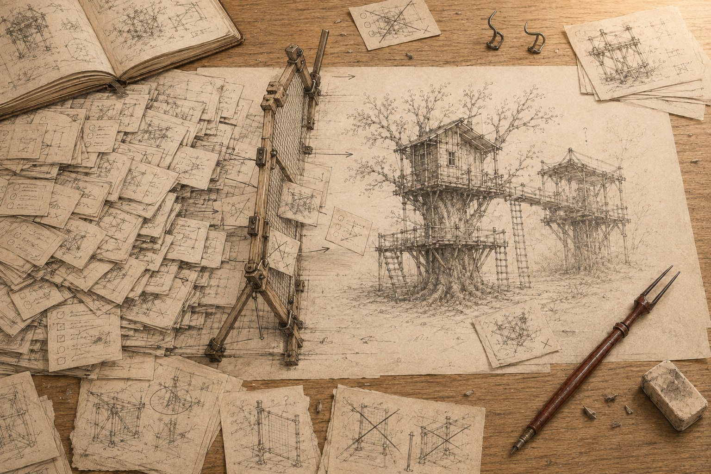
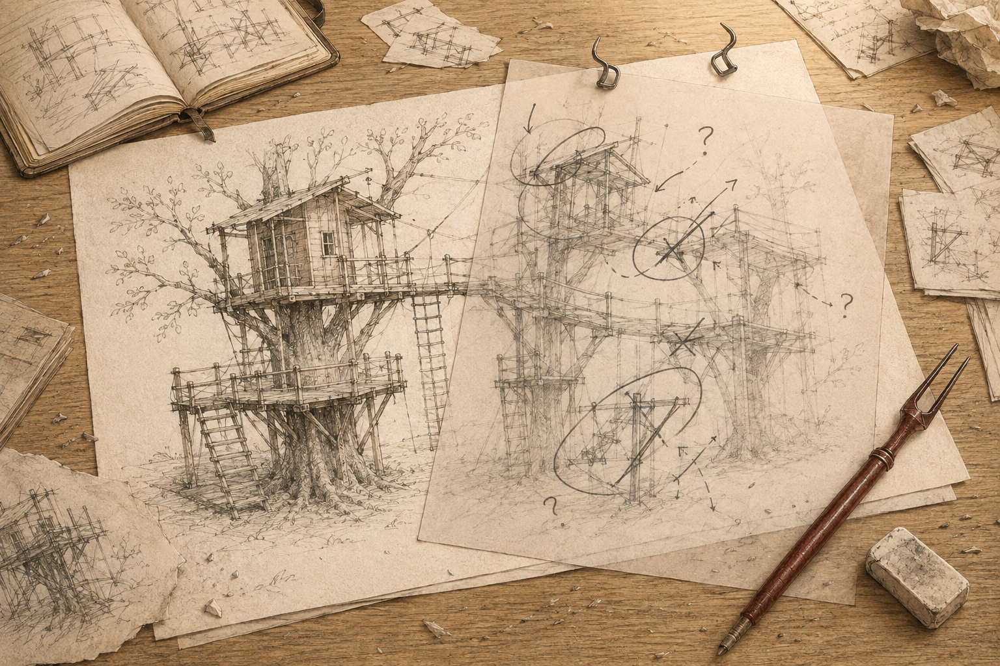
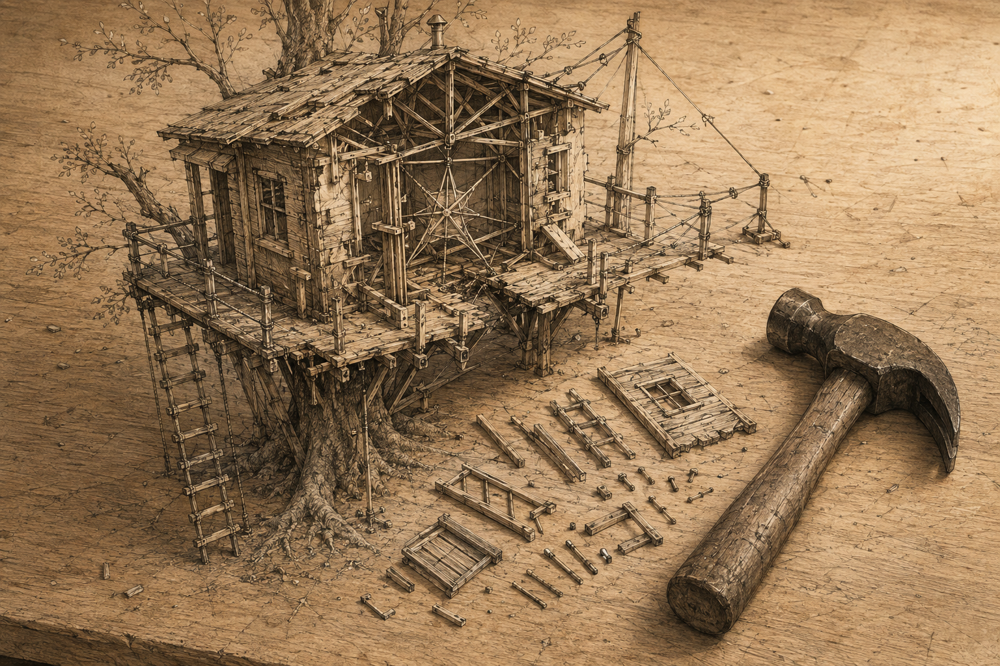
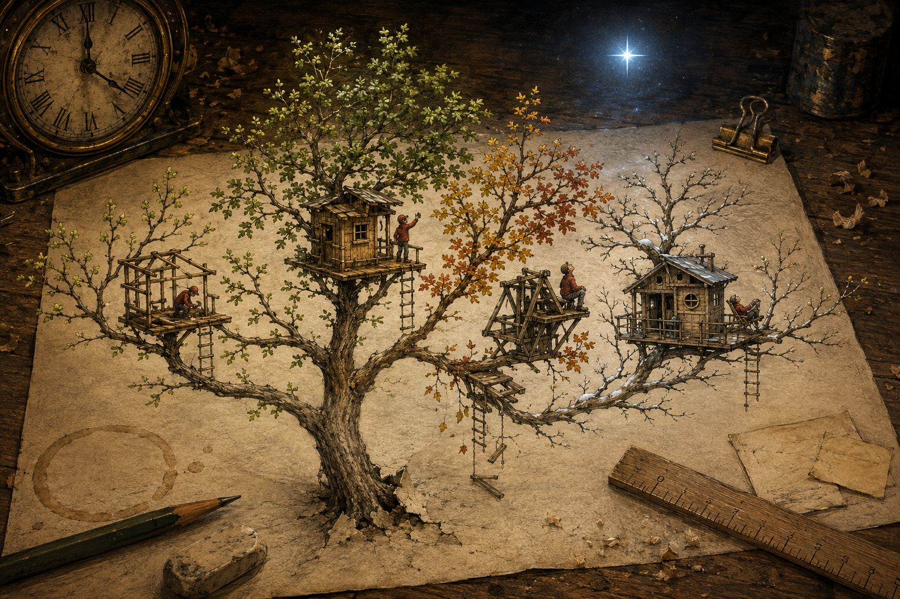
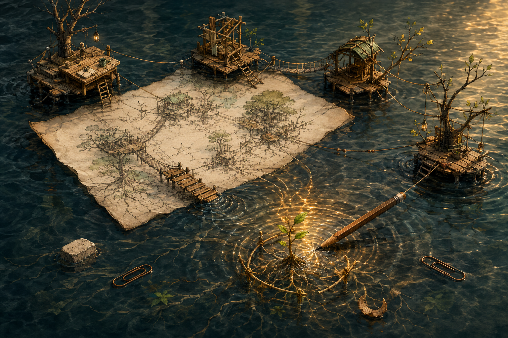
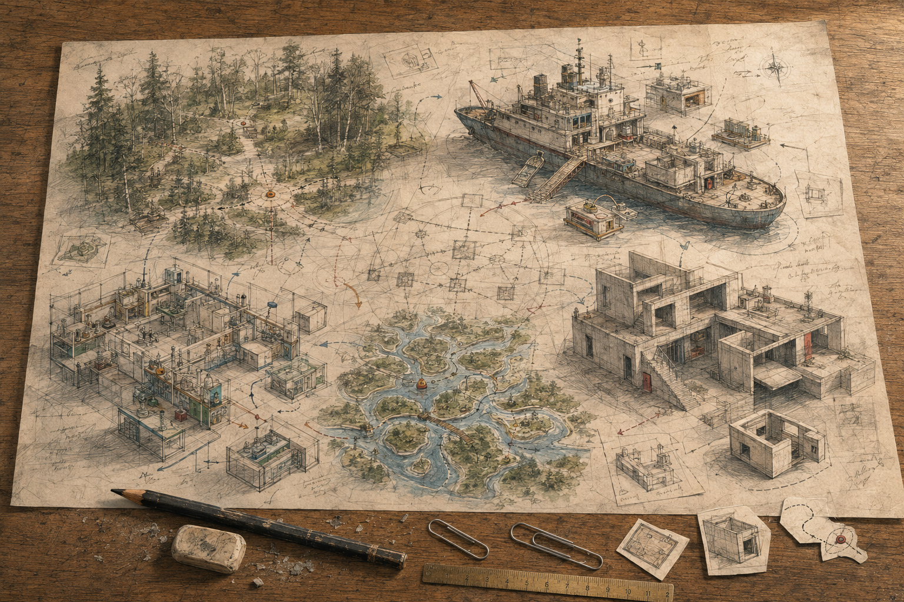
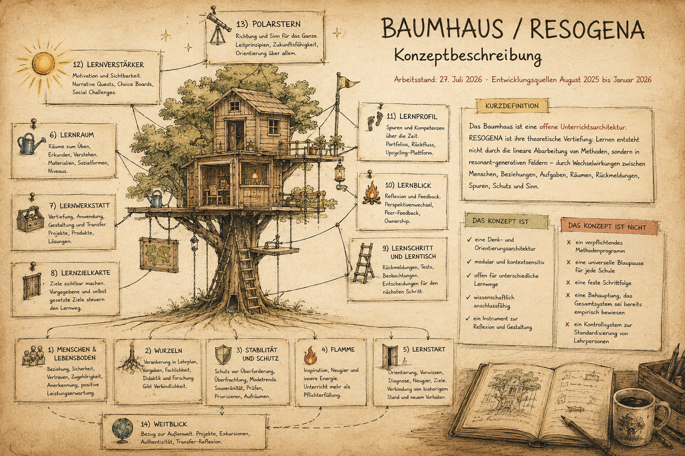

Was ich übersehen habe
«Wie konnte ich nur nicht an Schutz denken?», frage ich mich, während ich das ausgedruckte Baumhaus-Konzept vor mir auf dem Schreibtisch anschaue.
Ich wollte das Baumhaus gegen Kritik unangreifbar machen und hätte dabei beinahe genau das zerstört, was ich bewahren will: seine Offenheit. Schutz bedeutet deshalb nicht, noch mehr Regeln, Elemente oder Sicherungen einzubauen. Schutz bedeutet, Grenzen zu setzen und etwas bewusst unvollständig zu lassen. Zu diesem Schluss bin ich gestern gekommen. Aber gilt dies überall? Und stimmt das?
Schutz bedeutet Begrenzung.
In meiner Freizeit arbeite ich oft an technischen Projekten: an elektronische Schaltungen, die Schutzeinrichtungen benötigen, an einem Windmesser, der bei starkem Wind die Sonnenstore hochfährt, oder an einer Steuerung für die Bewegungsmelder im Treppenhaus, die das Licht nur unterhalb einer festgelegten Helligkeit einschaltet und nach einer bestimmten Zeit wieder ausschaltet.
Bei diesen Projekten plane ich nicht nur, was die Steuerung tun soll. Ich lege auch fest, unter welchen Bedingungen sie reagieren darf, wann sie abschaltet und was bei einem Fehler oder einer überschrittenen Grenze geschieht.
Die Systeme funktionieren unterschiedlich. Eine Sicherung unterbricht. Der Windmesser löst eine Schutzreaktion aus. Das Treppenhauslicht prüft zuerst, ob es überhaupt gebraucht wird, und schaltet sich später selbständig wieder aus.
Gemeinsam ist ihnen nicht dieselbe technische Logik, sondern eine Konstruktionsentscheidung: Ich bestimme nicht nur, was ein System tun soll. Ich lege auch fest, wann es beginnen darf, wann es aufhören muss und was es verweigern soll. Jede dieser Steuerungen kennt deshalb nicht nur ein «Mach das», sondern auch ein «Noch nicht», ein «Nicht weiter» oder ein «Stopp».
Jedes dieser Systeme kann «Nein» sagen.
Dann denke ich an die Volksschule.
Die Schule kennt auch Schutzmechanismen. Es gibt Vorgaben für Sicherheit, Datenschutz, Kindesschutz, Qualität und vieles mehr. Gleichzeitig fehlt es ihr auch nicht an Zielen, Konzepten, Instrumenten und Anforderungen. Sie kommen aus der Politik, von Behörden, aus der Wissenschaft, von Eltern, aus der Schule selbst. Jede einzelne Forderung lässt sich begründen. Jede soll ein Problem lösen oder Schule besser machen. Doch wer verantwortet ihre Summe?
Die Schule schützt vieles. Aber wer schützt die Schule davor, mehr aufnehmen zu müssen, als sie bewältigen kann?
Ich suche nach der Stelle, an der diese Anforderungen geprüft werden, bevor sie das Schulzimmer erreichen. Gibt es zeitliche oder mengenmässige Kapazitätsgrenzen? Was geschieht, wenn sie überschritten werden? Fällt eine bestehende Aufgabe weg, wenn eine neue hinzukommt? Wer prüft später, ob eine Einführung tatsächlich etwas bewirkt hat? Und wer darf «Stopp» sagen?
Ich finde in der Schule viele Verfahren, mit denen Neues eingeführt wird. Aber ich finde kaum eines, mit dem die Schule wieder etwas los wird.
Ich drucke das Baumhaus aus und lege es auf den Tisch. Die Schutzmechanismen schreibe ich auf Post-its, um zu sehen, wo diese wirken sollen. Wenn ich verhindern will, dass es unter der Last seiner eigenen Möglichkeiten zusammenbricht, muss ich ihm beibringen, Nein zu sagen.
Ich brauche eine Firewall. Keine starre Mauer, sondern eine durchlässige Grenze, die prüft, was hinein darf und was wieder hinaus muss. Das Baumhaus kann nicht alles aufnehmen und muss doch offen bleiben.
Ich schreibe mir drei erste Regeln auf: Ein neues Element erhält ein Verfallsdatum und bleibt nur, wenn ich es bewusst verlängere. Eine Kapazitätsgrenze im Masterprompt oder YAML begrenzt die Anzahl der Aufgaben und Instrumente; ein Aufwandsalarm warnt mich vor überladenen Planungen. Und wenn etwas Neues hinzukommt, muss ich entscheiden, was dafür wegfällt. Schutz bedeutet auch, etwas wegzulassen. Ich spiele diese letzte Regel an einem Beispiel durch: Entwickle ich ein kantonales Standardformular qualitativ weiter, darf es nicht einfach zusätzlich eingesetzt werden. Entweder kann es dieses ersetzen oder es bleibt draussen.

Abb. 1Ich nehme diesen Schutz in das Konzept auf. Noch immer liegt das Baumhaus vor mir auf dem Schreibtisch. Da kehrt die Unzufriedenheit zurück. Der Schutz zeigt mir jetzt, was dem Baumhaus nicht geschehen darf. Meine andere Frage beantwortet er nicht:
Was fehlt?
Es ist nicht ein weiterer Baustein, nach dem ich suche. Dieses Mal liegt das Gefühl tiefer. Ich spüre, dass etwas fehlt – aber ich weiss weder, was es ist, noch wo ich danach suchen soll. Wenn ich die Antwort durch Weiterbauen nicht finde, muss ich die Suchrichtung ändern. Ich drehe GPT um und setze ihn nicht länger als co-konstruktiven Sparringpartner ein. Er soll das Baumhaus nicht verbessern, sondern angreifen – Seine Rolle: mein schärfster Kritiker und grösster Fehlerfinder.
Advocatus diaboli
Zwei Wochen später. Eine KI findet immer eine Möglichkeit, eine Idee gut aussehen zu lassen. Während ich mit ihm am Baumhaus arbeite, frage ich mich immer wieder: Stimmen seine Aussagen? Seine Bewertungen und Beurteilungen? Oder liefert er mir einfach die überzeugendste Darstellung dessen, was ich ohnehin hören wollte?
Ich will einen kognitiven Sparringpartner und keine gezuckerte Vollrahmdose, die alles versüsst. Lange sitze ich vor dem PC und überlege mir, wie ich GPT dazu bringe, nicht länger für, sondern gegen meine Idee zu argumentieren.
Du:
Wie kann ich sicher sein, dass du mir nicht Honig um den Mund streichst? Kontrollaufgabe: Ich gebe dir den Auftrag, das Modell, den Ansatz und die Idee, die hinter dem Baumhaus steckt, auf Falschheit zu prüfen, alles zu kritisieren und von mir aus in den Dreck zu ziehen. Alles machen, um das traditionelle Verständnis von Schule besser dastehen zu lassen. Nicht erlaubt sind Unwahrheiten, psychologische Tricks, ....
GPT beginnt ohne Anlauf. Die erste Überschrift lautet: ‹Strukturelle Schwächen: Warum dein Modell in der Praxis scheitert›. Wenig später folgt: ‹Pädagogische Mängel: Warum dein Ansatz Lernende im Stich lässt›. Mit einer Direktheit, die ich so nicht erwartet habe, deckt er noch die kleinsten Schwachstellen auf, zerlegt und filetiert meine stundenlange Denkarbeit in Sekunden und präsentiert mir die schlechtesten Teile auf einem silbernen Tablett. Ich finde das – faszinierend.
Ich lese seine Kritikpunkte. Im Grunde sind es drei:
Zuerst greift er die pädagogische Offenheit an: Das Baumhaus verlasse sich zu stark auf Selbststeuerung und vernachlässige die systematische Vermittlung von Grundlagen. Davon profitieren vor allem Lernende, die bereits über Unterstützung, Sprache und Orientierung verfügen. Ausgerechnet ein Modell, das mehr Möglichkeiten schaffen wolle, verstärke bestehende Ungleichheiten.
Dann greift er die praktische Umsetzbarkeit an: Das Baumhaus sei zu teuer, zu anspruchsvoll und kaum skalierbar. Es brauche Räume, Zeit und Lehrpersonen, die bereit seien, weit über das Übliche hinauszugehen. Eltern erwartet von Schule Verlässlichkeit und keine dauernde Versuchsanordnung.
Schliesslich greift GPT das Modell systemisch an: Das Baumhaus sei idealistisch und schwer messbar. Es verspreche Lernabenteuer, Eigenverantwortung und Zukunftskompetenzen, könne aber nicht zeigen, ob daraus tatsächlich besseres Lernen entstehe. Vielleicht, so sein Vorwurf, reite ich auf einer Welle aus KI, Technik und Bildungsoptimismus, während für guten Unterricht ein Buch und eine gute Lehrperson ausreichten.
GPT kennt inzwischen die Autoren, die ich in den Chats immer wieder nenne. Deshalb überrascht es mich nicht, dass er ausgerechnet Hattie heranzieht, um auch mit dem empirischen Finger auf die Lücken meines Baumhauses zu zeigen. Seine Kritik setzt er fort mit: «Für dein Lernabenteuer fehlt die Evidenz.»
Er wirft mir vor, Erkenntnisse zur Wirksamkeit zu ignorieren. Mein Baumhaus stelle Projektlernen mit d = 0.30 und Game-based Learning mit d = 0.34 über direkte Instruktion mit d = 0.59. GPT macht noch eine ganze Weile weiter und schliesst mit zwei Fragen: «Wo sind die harten Daten? Und die Messbarkeit?» Die Antwort gibt er gleich selbst: «Fehlanzeige!»
Die Kritik ist hart. Aber sie ist kein Beweis, dass GPT recht hat, weil ich die Angaben nicht überprüfe. Er argumentiert sprachlich sehr überzeugend – diesmal einfach gegen mich. Ich atme tief durch, weil die Kritik sitzt. Trotz der grossen Arbeit, die im Baumhaus steckt, empfinde ich die Kritik interessanterweise nicht als Angriff und ich sehe ihre Härte auch nicht als Niederlage. Seine Antwort zeigt mir aber, dass der Versuch funktioniert hat.
Ich lasse die Kritik eine Weile wirken. Dann beobachte ich einen interessanten Prozess in mir: Das Wasser aus der kritischen Giesskanne löscht mein inneres Feuer nicht. Stattdessen beginnen auf dem Boden neue Fragen zu spriessen.
Plötzlich entdecke ich Fragen an Stellen, an denen ich bisher zu schnell weitergedacht habe. Die Kritik beantwortet diese Fragen nicht und vor allem eine davon bleibt mir besonders hartnäckig: Wie verhindere ich, dass ausgerechnet jene Lernenden allein bleiben, die am dringendsten Orientierung brauchen?

Abb. 2Zerstöre die Schule und du findest, was du suchst
Die letzte Kritikrunde hat mir gute Fragen gebracht, aber ich komme trotzdem nicht weiter bei der Suche nach dem Unbekannten. Die einzelnen Bausteine wirken in sich stimmig, aber mit ihrem Zusammenspiel stimmt etwas nicht.
An diesem Montag studiere ich an diesen Verbindungen zwischen den Elementen herum und frage mich, ob es nicht auch irgendetwas drum herum gibt – etwas, das Wachstum und Entwicklung ermöglicht? Aber auf der Suche nach diesem Guten komme ich nicht weiter. Also frage ich mich: Was passiert, wenn ich die Suchrichtung wieder umkehre?
Ich suche nicht danach, was das Baumhaus wachsen lässt, sondern frage, was es zerstören könnte: Seine Elemente, seine Verbindungen und der ganze Bereich, auf dem sie stehen. Was bringt Wachstum und Entwicklung zum Stillstand?
Wenn ich diese schädigenden Faktoren erkenne, kann ich sie invertieren. Soweit meine Logik.
Und wenn ich weiss, was Schule zerstört, weiss ich vielleicht auch, was sie wachsen lässt.
Also schreibe ich einen Prompt und bin einverstanden – man merkt dem Prompt an, dass ich früher viele Tom-Clancy-Romane gelesen habe.
Du:
Wenn ein Geheimdienstagent der CIA die Aufgabe hätte, die Schule von innen zu zerstören. ZB Desinformation, Subversion,… Wie würde er dies anstellen? Wie heissen diese Fachbegriffe für diese Art der psychologischen Kriegsführung.
Beim Lesen der Antwort realisiere ich, dass ich eine Tür geöffnet habe, die besser geschlossen geblieben wäre. GPT führt historisch dokumentierte Begriffe aus der Subversion, den psychologischen Operationen und der hybriden Kriegsführung ein und überträgt sie auf die Schule.
In diesem Gedankenspiel greift der Agent die Schule nicht von aussen an. Sein Ziel ist, sie von innen zu schwächen, indem er das Vertrauen in das Bildungssystem untergräbt. GPT beschreibt ausführlich verschiedene Methoden wie Desinformation, Cognitive Warfare, Active Measures, Grey-Zone-Taktiken und kulturelle Subversion. Interessiert lese ich diese Strategien aus dem Kalten Krieg und staune, welche strategische Bedeutung GPT der Volksschule zuschreibt. Schule erscheint darin nicht nur als Ort des Lernens, sondern als Trägerin gemeinsamer Werte, Normen und kultureller Identität.
Was sich bis jetzt wie ein fiktiver Roman liest, verändert plötzlich meine Wahrnehmung, als GPT beginnt, mögliche Taktiken aufzuzählen:
Lehrpläne mit immer neuen, schwer überprüfbaren Kompetenzen überfrachten. Eine Kompetenzinflation erzeugen: viele Begriffe, wenig Klarheit und immer grösseren Interpretationsspielraum.
Lehrpersonen mit Dokumentationspflichten überziehen und Beurteilungen überakademisieren. Am Ende zählt nicht mehr, was wirkt, sondern was sich nachweisen lässt.
Schule und Unterricht ideologisch polarisieren: „links-grün“ gegen „konservativ“. Themen wie Gender, Klima oder Migration für Lagerkämpfe instrumentalisieren, Misstrauen schüren und Lehrpersonen spalten.
Individualisierung so weit treiben, bis die Klasse fragmentiert: einzelne Lernwege, digitale Selbstlernprozesse, weniger gemeinsame Erfahrungen und immer weniger soziale Bindung.
Systematisch Zweifel an der Fachkompetenz von Lehrpersonen säen. Einzelfälle zu Beweisen für das Versagen der Schule erklären: „Der Lehrplan versagt.“ „Die Kinder können nicht mehr lesen.“ Eltern und Lehrpersonen gegeneinander aufbringen.
«Das ist aber nicht mehr Kalter Krieg», denke ich. «Ist das nicht wie heute? Ist das nicht das Hier und Jetzt?» Dann halte ich inne. Habe ich bei GPT nicht gerade eine Zerstörungsanleitung bestellt? Nicht mit Gewalt, nicht lautstark, sondern langsam, geduldig und unbemerkt.
«Warum die Schule?», frage ich GPT und er erklärt die Schule zu einer Schlüsselstruktur einer stabilen Gesellschaft. Wird sie geschwächt, so seine Argumentation, leiden langfristig der gesellschaftliche Zusammenhalt, die Demokratie und die wirtschaftliche Entwicklung – kurz: die Zukunftsfähigkeit einer ganzen Nation. Mir leuchtet das ein.
Ich denke weiter und frage mich, was GPT mit «Schule» meinen könnte. Die Schülerinnen und Schüler, die Eltern, die Schulleitungen, Behörden, Verwaltung – oder die Lehrpersonen?
Vielleicht sind die Lehrpersonen der empfindlichste Punkt im System. Ich spiele den Gedanken weiter: Wenn ich die Schule schwächen wollte, könnte ich bei den Lehrpersonen ansetzen? Würden sie systematisch geschwächt, hätte das Auswirkungen auf die Unterrichtsqualität? Und was, wenn diese Folgen zunächst unsichtbar blieben? Wenn sie sich erst Jahre später zeigen – in den beruflichen Chancen und Entwicklungsmöglichkeiten einzelner Jugendlicher und, in ihrer Summe, vielleicht sogar in der ganzen Gesellschaft? Vielleicht zu spät, um noch zu erkennen, womit die Kette begonnen hat?
Vielleicht beginnt die Zukunft
eines Landes damit,
wie es über seine Lehrpersonen denkt.

Abb. 3Zwischen Gleichschritt und Vereinzelung
Der Gedanke steht nun im Raum. Ich beginne bei einer Entwicklung, die mich schon länger beschäftigt: Was macht zunehmende Standardisierung mit den Lehrpersonen?
Gleichzeitig soll der Unterricht auf Ebene der Schülerinnen und Schüler immer individueller werden. Das wirkt widersprüchlich: mehr Differenzierung bei den Lernenden, mehr Standardisierung bei Schulen und Lehrpersonen.
Ich gebe zu: Der nächste Prompt schreibe ich nicht tiefenentspannt. Er ist manipulativ und suggestiv und ich formuliere die gewünschte Antwort beinahe schon in die Frage hinein.
Du:
Die Schule wird vermehrt konformisiert und standardisiert, was dazu führt, dass vor allem engagierte Lehrpersonen innerlich kündigen und Dienst nach Vorschrift machen. Unterstützt das die Zersetzung der Schule?
Selbstverständlich bestätigt GPT, dass eine übermässige Standardisierung eine Schule von innen erodieren lassen kann. Wenn engagierte Lehrpersonen innerlich kündigten, verliere die Schule ihre lebendige professionelle Substanz. Lehrpersonen erleben sich nicht mehr als Fachleute, sondern als Ausführende eines Systems. Eigene Ideen, Erfahrungen und Intuition werden durch Vorgaben, Checklisten und Raster ersetzt. Nachweisbarkeit wird wichtiger als Wirksamkeit. Hinter jedem neuen Kontrollinstrument steckt auch eine Botschaft: Wir vertrauen eurem professionellen Urteil nicht. Und wenn jede Abweichung zuerst begründet, dokumentiert und abgesichert werden muss, wird aus einer neuen Idee schnell ein zusätzliches Risiko.
Vielleicht sollen die Kontrollen vor allem einen Mindeststandard sichern. Sie sollen verhindern, dass einzelne Lehrpersonen zu wenig tun oder sich dem gemeinsamen Auftrag entziehen. Aber möglicherweise treffen sie zuerst die Falschen. Nicht jene, die ohnehin nur Dienst nach Vorschrift machen, sondern die Engagierten: jene, die ausprobieren, Verantwortung übernehmen und mehr tun als verlangt. Gerade sie verlieren durch immer engere Vorgaben ihren Handlungsspielraum.
Vielleicht ziehen sie sich zurück. Vielleicht machen sie irgendwann selbst nur noch Dienst nach Vorschrift. Vielleicht gehen sie. Und mit ihnen verschwindet in der Schule ein Teil des pädagogischen Feuers.
Du:
Individualisierung als Schwächungsinstrument. In einer heterogenen Klasse ist Vielfalt Realität und Differenzierung Mittel zur Zielerreichung. Müsste dann alles nach Schema x ablaufen? Einheitlichkeit und Konformität.
GPT bremst meine Zuspitzung. Individualisierung sei nicht an sich ein Schwächungsinstrument. In einer heterogenen Klasse sei Differenzierung notwendig. Kinder brächten unterschiedliche Voraussetzungen, Interessen und Lernstände mit. Darauf nicht zu reagieren, wäre keine Gerechtigkeit, sondern Gleichbehandlung um jeden Preis.
Problematisch werde es, wenn Differenzierung in radikale Individualisierung kippe: Die Lehrperson verwalte 24 einzelne Lernwege, gemeinsame Erfahrungen und Ziele verschwänden, und aus einer Klasse würden Lernende, die zufällig im selben Raum sässen.
Auch die versprochene Freiheit verteilt sich nicht automatisch gerecht. Kinder, die zu Hause Unterstützung erhalten und ihren Lernweg bereits selbst organisieren können, finden sich eher zurecht. Andere verlieren möglicherweise genau die Orientierung, die Schule ihnen geben müsste.
Bildung droht damit vom gemeinsam getragenen öffentlichen Gut zum privaten Projekt einzelner Lernender zu werden.
Damit kippt mein Gedankenspiel. Zu viel Einheitlichkeit kann Lehrpersonen in den Dienst nach Vorschrift treiben. Aber eine grenzenlose Individualisierung kann sie von der anderen Seite überfordern – und gleichzeitig das Gemeinsame schwächen. Ich stehe zwischen zwei Gefahren, die sich nicht gegenseitig aufheben, sondern beide zugleich wirken können.
Keiner der beiden Pole gibt mir die Orientierung, die ich suche. Ich möchte bewegliche Post-its, aber keine Beliebigkeit. Eine gemeinsame Struktur, aber keinen Gleichschritt. Differenzierung, aber nicht 24 voneinander getrennte Lernwege.
Das Baumhaus braucht deshalb mehr als nur Post-its, die ich hinzufügen, verschieben oder entfernen kann. Es braucht einen festen Bezugspunkt, an dem ich Entscheidungen prüfen kann. Eine Richtung. Die Frage lautet nun nicht mehr nur: Was kann sich verändern?
Was muss bleiben,
wenn sich alles andere verändern darf?
Die Richtung bleibt
Die Idee mit dem Polarstern ist nicht neu. Schon am Abend des 25. August schreibe ich ihn auf, als ich Mistral die einzelnen Elemente des Baumhauses erkläre. Bei der Baumkrone schreibe ich hin: Was ist das oberste Ziel? Was wird auch in zwanzig Jahren noch Bestand haben, wenn sich Technologien, Methoden und Bedingungen längst verändert haben? Was ist unser Polarstern?
Damals bleibt es eine Frage innerhalb eines einzelnen Promptes. Am nächsten Tag arbeite ich lange in einem Chat und Mistral stellt mir eine Abschlussfrage:
Mistral:
Wenn du eine Sache aus deinem Modell für die Ewigkeit konservieren könntest – welche wäre das? (Nicht weil sie perfekt ist, sondern weil sie dich am meisten berührt.)
Meine Antwort besteht aus zwei Wörtern:
Du:
Der Polarstern
Mistral schreibt:
Ein Polarstern braucht keine Werbung.
Er ist einfach da – für die, die ihn suchen.
Der Begriff ist nicht neu. Aber seine Bedeutung verändert sich für mich. Am Vorabend war der Polarstern noch eine Frage innerhalb der Baumkrone. Jetzt wird er zur Antwort auf die Frage, was bleiben muss, wenn sich alles andere verändern darf. Der Polarstern ist kein weiteres Element, das ich ins Baumhaus kleben kann. Er ist keine Methode und kein Instrument, weil diese kommen und gehen. Unterricht muss sich verändern können, weil sich Menschen und Bedingungen verändern.
Was genau dieser Polarstern enthält, habe ich noch nicht abschliessend bestimmt. In meinen bisherigen Skizzen tauchen aber fünf Orientierungspunkte immer wieder auf: Kompetenzaufbau, Selbstwirksamkeit, Lernen lernen, Transfer und Zusammenarbeit. Seine Aufgabe wird klar: Er gibt mir einen festen Bezugspunkt, an dem ich Veränderungen prüfen kann, ohne einen bestimmten Weg vorzuschreiben. Das Baumhaus soll den Menschen dienen – nicht die Menschen dem Modell. Der Weg darf sich verändern. Die Richtung bleibt.

Abb. 4Die Elemente beginnen, aufeinander zu wirken.
Der Polarstern gibt mir eine Richtung und erinnert mich daran, was bleiben soll, wenn Methoden, Werkzeuge oder einzelne Bausteine sich verändern.
Aber er beantwortet eine andere Frage noch nicht: Was geschieht zwischen den Bausteinen, wenn ich eines davon verschiebe?
Du:
Ich will die Diagnosetests lernzieltechnisch mit dem Baustein 2 verknüpfen. Die Lernzielkärtchen sind mit dem Baustein 1 „Starterkit“ verknüpft. Irgendwie passt alles nicht. […] Wenn ich für jedes Thema sechs Bausteine erstellen muss, überfordert das nicht nur mich, sondern auch die Jugendlichen. So viele Instrumente sind zwar toll, können aber verwirren. Ich will keinen linearen Unterricht.
Anfang August habe ich das Baumhaus um das Lehrmittel herum gebaut. Daraus sind einzelne Bausteine entstanden: Lernzielkärtchen, Diagnosetests und Aufgaben. Sie alle sind mit dem Lehrmittel verbunden. Aber eben nicht nur.
Ich habe diese als Post-its auf den Schreibtisch geklebt und mir die Frage gestellt: "Was geht da dazwischen ab?" Und beim Umkleben der Post-its ist mir aufgefallen, dass ich nie ein einzelnes Post-it verschiebe, ohne an mindestens ein anderes zu denken. Sie wirken aufeinander.
Ich merke, dass die Lernzielkärtchen und der Diagnosetest miteinander verbunden sind. Die Lernziele bestimmen, was der Test überprüft. Der Test zeigt, welche Aufgaben gebraucht werden. Und bei der Arbeit an diesen Aufgaben merke ich, dass ich ein Lernziel neu formulieren muss. Das ist für mich nicht neu. Aber was passiert, wenn ich mit Hilfe einer KI die Grenzen zwischen den Bausteinen durchlässiger mache und dadurch die Verbindungen sichtbarer werden?
Monate später, als ich mit denselben Bausteinen weiterarbeite, nenne ich dieses Aufeinanderwirken zunächst Resonanz, ohne zu wissen, wie ich dieses ‹Etwas› zwischen den Elementen beschreiben soll. Ist es eine Verbindung? Eine Kraft? Ich weiss es nicht.
Mit den Bausteinen entwickle ich nicht einfach Module, die ich beliebig auf den Unterricht packen kann. Es sind keine Add-Ons. Die Bausteine können sich verändern, sich entwickeln und wachsen. Das ist die Idee vom Baumhaus:
Es ist kein starres Gebäude — es schwingt, es antwortet, es lebt.
Du:
„Zuerst einmal sind alle Elemente nicht isoliert zu betrachten. […] Alles hat seinen Sinn und seinen Zweck, basiert auf etwas und ist für etwas Weiteres bestimmt.“
Diese Veränderungen von Bausteinen und ihre Wirkung auf andere Elemente kann dazu führen, dass aus ihrem Zusammenspiel etwas entsteht, das vorher noch nicht da war. Ist das generativ? Zusammen mit der Resonanz versuche ich, sie zusammenzubringen als resonant-generativ. Sie beschreiben am besten, wonach ich suche. Dann kürze ich sie ab zu: RESOGENA. Es ist keine Theorie und kein fertiges Modell. Es ist einfach mein vorläufiger Arbeitsname für ein Phänomen, das ich aus dem Schulzimmer kenne, über das ich aber nie wirklich nachgedacht habe. Ich denke, ich muss in noch tiefer suchen gehen. Irgendwo beim Lernen zwischen Mensch, Aufgabe und Welt, irgendwo muss es sein. Und ich stelle mir vor, wie ein Feld dieses etwas darstellt.

Abb. 5Soll ich aufhören?
In den letzten Wochen frage ich mich immer häufiger, warum ich das mache.
Es gehört nicht zu meinem Berufsauftrag. Ich verdiene kein Geld damit. Niemand erwartet etwas von mir. Kein Mensch weiss etwas von diesem Projekt. Die Kids erleben einen anderen Unterricht und sagen, er sei cool. Aber sie wissen nicht, was dahintersteckt.
Bin ich in einem Loop gefangen?
Je weiter ich das Baumhaus entwickle, desto stärker verändert es auch mich – und desto mehr entfernen sich meine Vorstellungen von Schule und Unterricht von den Rahmenbedingungen und der Realität, in der ich arbeite. Ich weiss nicht, ob sich die Volksschule in den letzten Jahren verändert hat oder ich mich in den letzten Monaten. Aber mein Weg und der Weg der Volksschule scheinen nicht mehr in die gleiche Richtung zu führen. Der Abstand zwischen Ist und Soll wächst.
Der Aufwand hat längst Dimensionen angenommen, den ich nie erwartet habe. Gleichzeitig reizt es mich, etwas Neues zu entdecken und so schwanke ich zwischen Aufhören und Weitermachen. Das muss ich selbst entscheiden. Eine KI kann mir diese Entscheidung nicht abnehmen. Sie kann aber meine Gründe prüfen, Gegenargumente sichtbar machen und mir zeigen, ob ich etwas übersehe. Also unternehme ich eine letzte Gegenprobe und schreibe:
Du:
Ehrliche und kritische Rückmeldung: Soll ich diese Projektidee weiterverfolgen? Beurteile ihre Sinnhaftigkeit, Notwendigkeit, Komplexität, Zukunftsfähigkeit und Einzigartigkeit – und berücksichtige auch Kriterien, die ich möglicherweise übersehe.
GPT wägt das Projekt ab. Es spricht für das Weitermachen: Das Baumhaus verbinde Elemente, die sonst häufig getrennt betrachtet würden, und richte den Blick auf Fragen, die für die Zukunft der Schule wichtig seien. Gleichzeitig warnt es vor der wachsenden Komplexität, dem enormen Zeitaufwand und der Gefahr, ein Modell zu entwickeln, das am Ende nur für mich selbst funktioniert. Die Antwort ist differenzierter als frühere Einschätzungen, und trotzdem empfiehlt er nichts. Stattdessen schlägt GPT einen Perspektivenwechsel vor: Ich solle mir vorstellen, wie ich im Jahr 2040 auf diesen Moment zurückblicke.
ChatGPT:
Stell dir vor, es ist 2040 und […]
«… du hast es nicht gemacht.»
«… hast es gemacht, aber bist gescheitert.»
«… hast es gemacht und es funktioniert.»
Ich lese GPTs Antwort und stelle fest, dass die drei Rückblicke meine Frage nicht beantworten. Aber beim Lesen merke ich, dass meine Entscheidung längst gefallen ist.
Ich mache weiter.
Einfach weil ich spüre, dass ich in einem Moment lebe, in dem gerade etwas Neues entsteht. Und ob das Baumhaus seiner Zeit voraus ist, wie GPT sagt, weiss ich nicht. Aber ich darf erleben, wie es entsteht. Das genügt mir.
Eine persönliche Werkstatt
Ich habe entschieden weiterzumachen. Doch als ich erneut auf das Baumhaus schaue, kehrt eine vertraute Unruhe zurück. Ich sehe die Elemente und die Verbindungen zwischen ihnen. Ich sehe, wie sie aufeinander reagieren und sich gegenseitig verändern können. Aber selbst dieses vernetzte System setzt sich nicht von allein in Bewegung. Diesmal fehlt kein weiteres Werkzeug und keine zusätzliche Methode. Es fehlt etwas, das all diese Möglichkeiten überhaupt erst lebendig macht.
Du:
Neue Frage: Siehst du im Baumhaus-Modell noch ein Element, und sei es auch noch so unbedeutend und klein, und auch wenn es im entferntesten es mit dem übergeordneten Ziel im Feld "Baumkrone" hat, das im Modell fehlt?
GPT schlägt einen Samen oder Keimling vor – ein kleines Element, das für die Zukunft des Baumes steht. Zuerst wirkt die Antwort beinahe zu einfach. Dann erkenne ich, was mir an diesem Bild gefällt: Der Samen ist kein weiteres Modul, das ich ins Baumhaus einbauen muss. Er steht für den Menschen, der seine Möglichkeiten überhaupt erst in Bewegung bringt. Für Neugier. Für innere Motivation. Für die Bereitschaft, eine Frage weiterzuverfolgen, obwohl niemand einen Auftrag dazu erteilt hat.
Das Baumhaus kann Räume öffnen, Werkzeuge bereitstellen und Verbindungen ermöglichen. Aber es kann niemanden dazu zwingen, etwas daraus wachsen zu lassen. Vielleicht liegt hier der Unterschied zwischen einem System, das lediglich funktioniert, und einem Menschen, der aus eigenem Antrieb etwas entwickelt.
Das Bild des Samens lenkt meinen Blick zurück auf mich selbst. Was hat dieses Baumhaus eigentlich in Bewegung gebracht? Ich wollte nie ein Modell entwickeln. Ich wollte Unterricht vorbereiten. Doch aus jeder Antwort entstand eine neue Frage. Aus jedem Element ergab sich eine weitere Verbindung. Ich baute weiter, weil ich verstehen wollte, was in meinem Unterricht geschieht und was ich verändern kann. Und deshalb ist es auch kein Modell, das sich vergleichen lässt. Das ist meine Werkstatt. Kein Modell aus Marmor und kein Denkmal, das fertig gebaut und anschliessend verteidigt werden muss. Es bleibt beweglich. Ich kann prüfen, verschieben oder entfernen. Was heute funktioniert, darf morgen wieder verschwinden.
Seine einzelnen Elemente sind nicht neu. Lernziele, Rückmeldungen, Portfolios und Lernwerkstätten gibt es längst. Auch ihre Kombination ist nicht automatisch einzigartig. Entscheidend ist, warum ich sie auswähle, wie ich sie miteinander verbinde und wann ich bereit bin, sie wieder zu verändern.
Jeder Unterricht entsteht unter anderen Bedingungen. Was zu meiner Klasse passt, muss nicht zu einer anderen passen. Deshalb lässt sich das sichtbare Ergebnis nicht einfach von einem Ort an einen anderen übertragen.

Abb. 6Einzelne Elemente lassen sich übernehmen. Wer aber nur das sichtbare Ergebnis kopiert, ohne den Denkprozess dahinter zu durchlaufen, baut eine Attrappe.
Erst rückblickend erkenne ich, dass daraus das Baumhaus geworden ist. Nicht als Plan. Nicht als fertige Theorie. Sondern als Spur meines eigenen Denkens. Ich will Antworten. Ich will Rätsel lösen. Ich will genug verstehen, um in meinem Unterricht gute Entscheidungen zu treffen. Das Baumhaus bündelt die Fragen, die mich dabei begleiten: Was brauchen die Kinder vor mir? Was darf sich verändern? Und was muss bleiben? Es ist meine ganz persönliche Art, all das ein bisschen besser zu verstehen.

Abb. 7Das Baumhaus?
Es ist nur eine sichtbare Form meines Denkens, Fragens und Bauens.